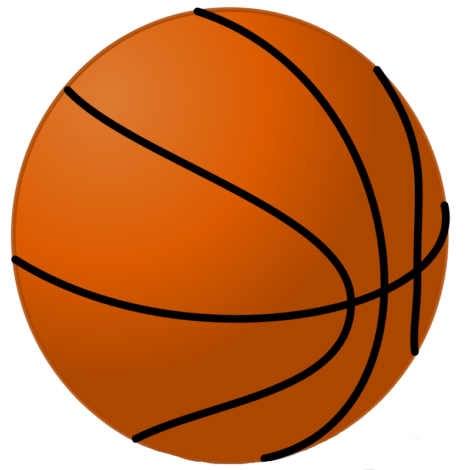

<!DOCTYPE HTML>
<html>
<head>
<title>JavaScript Events</title>
<meta http-equiv="Content-Type" content="text/html; charset=UTF-8" />
<meta name="description" content="Use of events" />
<style>
.float-left {
float:left;
position:relative;
padding:50px;
}
#hand {
position:relative;
left:30px;
z-index:0;
}
.hand1 {
position:relative;
left:30px;
top:100px;
z-index:0;
}
#width {
width:100%;
}
.ball {
position:relative;
left:50px;
z-index:-1;
bottom:35px;
}
.baseball {
position:relative;
left:40px;
top:22px;
z-index:2;
}
.hand2 {
position:relative;
left:30px;
z-index:0;
}
.ball2 {
position:relative;
left:50px;
z-index:-1;
bottom:35px;
}
.ball2 {}
/* Chrome, Safari, Opera */
@-webkit-keyframes dribble {
from {top: -35px;}
to {top: 100px;}
}
@keyframes dribble {
from {top: -35px;}
to {top: 100px;}
}
.throw {
-webkit-animation-fill-mode: forwards;
animation-fill-mode: forwards;
}
/* Chrome, Safari, Opera */
@-webkit-keyframes throw {
from {left: -35px;}
to {left: 100%;}
}
@keyframes throw {
from {left: -35px;}
to {left: 100%;}
}
#hand1 {
transform: rotate(-175deg);
}
.top {
width:100%;
height:450px;
}
.bottom {
width:100%;
height:500px;
}
</style>
</head>
<body>
<div class="top">
<h1>JavaScript Events</h1>
<div id="width" class="float-left">
<p style="color:green;" id="handSuccess"></p>
<p style="color:green;" id="ballSuccess"></p>
<p>Click on the hand</p>
<div id="hand" class="hand1" onclick="throwBall()"><img id="hand1" onload="handSuccess()" src="../../images/hand.png" alt="hand" width=75 height=75></div>
<div id="baseball" class="baseball"><img onload="ballSuccess()" src="../../images/baseball.png" alt="basketball" width=45 height=45></div>
</div>
</div>
<div class="bottom">
<div class="float-left">
<p>Type Something: <input id="input" oninput="inputToMoveBall()" type="text"></p>
<b><p id="event2"></p></b>
<div id="hand2" class="hand"><img src="../../images/hand.png" alt="hand" width=75 height=75></div>
<div id="ball2" class="ball"></div>
</div>
<div class="float-left">
<p>Touch the hand (Must use touch device or use touch simulation in Google Chrome)</p>
<b><p id="event3"></p></b>
<div id="hand3" class="hand"><img src="../../images/hand.png" alt="hand" width=75 height=75></div>
<div id="ball3" class="ball"></div>
</div>
</div>
<script>
// Example 1: onclick and onload
// In this example the animation was what I chose for the trajectory of the baseball because I wanted to be able to set a speed for the action as well as use a forward to make it not reset in place.
// I used a transform on the hand because I wanted to represent the hand moving when the ball is thrown and transform does a great job with rotation.
function handSuccess() {
document.getElementById("handSuccess").innerHTML = "Hand successfully loaded.";
}
function ballSuccess() {
document.getElementById("ballSuccess").innerHTML = "Ball successfully loaded.";
}
// Begin the dribble of the ball with JavaScript on
function throwBall() {
var baseball = document.getElementById('baseball')
baseball.style.WebkitAnimation = "throw .75s";
baseball.style.animation = "throw .75s";
baseball.style.animationFillMode = "forwards";
baseball.style.WebkitAnimationFillMode = "forwards";
document.getElementById("hand1").style.webkitTransform = "rotate(360deg)";
document.getElementById("hand1").style.transform = "rotate(360deg)";
}
// Example 2: oninput
// In this example of a basketball dribbling I chose to use animation for the ball going back and forth from the hand to the ground because
// I could set how fast the ball would move with it as well as how many times it dribbled.
// I chose to use a transition to make the ball bigger while it bounced. This was a better option because I was working with changing size of the CSS5 property.
function inputToMoveBall() {
var input = document.getElementById("input").value;
var ball2 = document.getElementById("ball2");
ball2.style.WebkitAnimation = "dribble 2s 5";
ball2.style.animation = "dribble 2s 5";
document.getElementById("imageball").style.setProperty("-webkit-transition", "5s");
document.getElementById("imageball").style.setProperty("transition", "5s");
document.getElementById("imageball").style.width = "200px";
document.getElementById("imageball").style.height = "200px";
var safari = document.getElementById("imageball");
var others = document.getElementById("imageball");
safari.addEventListener("webkitTransitionEnd", inputToMoveBall);
others.addEventListener("webkitTransitionEnd", inputToMoveBall);
function inputToMoveBall() {
document.getElementById("event2").innerHTML = "Woah, the ball got bigger!!!";
}
}
// Example 3: touchstart and animation
// In this example of a basketball dribbling I chose to use animation for the ball going back and forth from the hand to the ground because
// I could set how fast the ball would move with it as well as how many times it dribbled.
function touchToMoveBall() {
var input = document.getElementById("input").value;
ball3.style.WebkitAnimation = "dribble 2s 5";
ball3.style.animation = "dribble 2s 5";
}
window.addEventListener('load', function(){
var hand3 = document.getElementById('hand3');
var ball3 = document.getElementById('ball3');
hand3.addEventListener('touchstart', function(){
ball3.style.WebkitAnimation = "dribble 2s 5";
ball3.style.animation = "dribble 2s 5";
}, false)
// Code for Chrome, Safari and Opera
ball3.addEventListener("webkitAnimationStart", dribbleStart);
ball3.addEventListener("webkitAnimationIteration", dribbleRepeated);
ball3.addEventListener("webkitAnimationEnd", dribbleEnded);
// Standard syntax
ball3.addEventListener("animationstart", dribbleStart);
ball3.addEventListener("animationiteration", dribbleRepeated);
ball3.addEventListener("animationend", dribbleEnded);
function dribbleStart() {
document.getElementById("event3").innerHTML = "First dribble has begun";
}
function dribbleRepeated() {
document.getElementById("event3").innerHTML = "Dribbled again";
}
function dribbleEnded() {
document.getElementById("event3").innerHTML = "Dribbling has ended";
}
}, false)
</script>
<footer>
</footer>
</body>
</html>